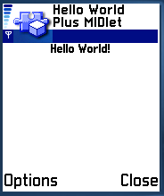
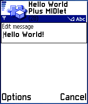
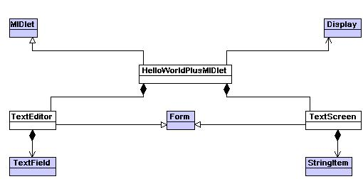
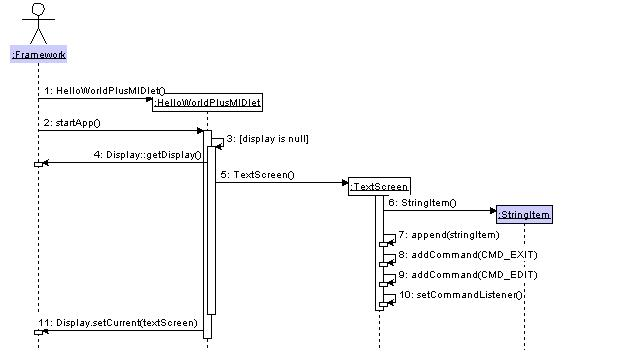
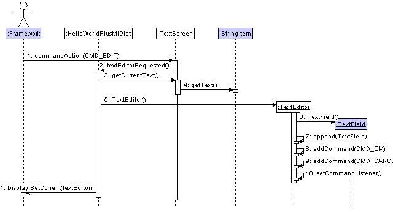
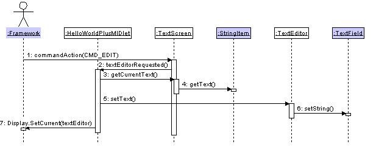
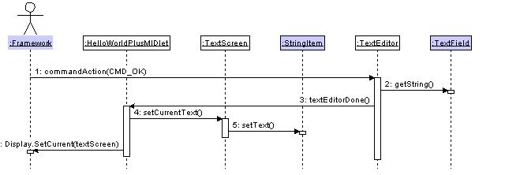
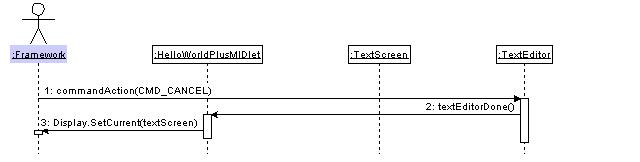
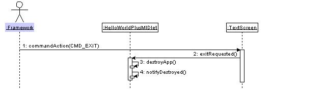
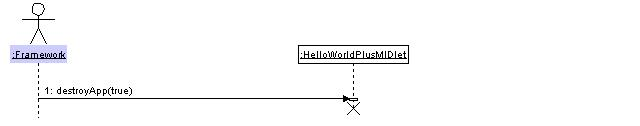

This example demonstrates how to create a simple interactive MIDlet.
The MIDlet described initially displays a "Hello World" message and allows
the user to edit that message.
This example demonstrates how to create a simple interactive MIDlet. The MIDlet described initially displays a "Hello World" message and allows the user to edit that message.
This example demonstrates the following:
- MIDlet lifecycle.
- Creating and handling commands.
- Creating UI's with high-level components and making those UI's visible.
- Managing transitions between different UI screens.
The example makes use of the standard MIDP application framework and LCDUI API. This example uses MIDP 2.0.
The example is built using the standard method for building and running as described in Building and running the examples.
The following classes should be included in the jar:
com.nokia.midp.examples.lcdui.helloworldplus.*
No resource files are used.
When launched, the application displays the following screen.
This displays the current text message and two commands, "Exit" and "Options".
- Select "Exit" to terminate the MIDlet.
- Select "Options" to open the menu, containing two options "Edit Text" and "Close".
- Select "Edit Text" to edit the displayed text.
- Select "Close" to instruct the system framework to terminate the MIDlet.
The difference between "Exit" and "Close" is discussed in sections 4.6 and 4.7.
Selecting "Edit Text" launches the text editing screen which is shown below.
The text editing screen contains an editable text field and two commands, "OK" and "Cancel". The text field is initialized with the text from the previous screen.
- Use the navigation and phone keys to move around and edit the text in the text field.
- Select "OK" to dismiss the text editing screen and accept the edited text.
- Select "Cancel" to dismiss the text editing screen and reject the edited text.
After dismissing the text editing screen, the user is returned to the text displaying screen. If the user had accepted the edited text, the text displayed will be updated. If the user had rejected the edited text, the text displayed will remain unchanged.
Application classes
HelloWorldPlusMIDletA simple MIDlet displaying either TextScreen or TextEditor UI objects. This class is responsible for responding to lifecycle events from the framework and the application itself. It is responsible for creating and maintaining references to the TextScreen and TextEditor UI objects. It also handles the transitions between these two UI objects.TextEditorProvides an editable text field along with an "OK" command key to dismiss this screen and accept the edited text, and a "Cancel" key to dismiss this screen and reject the edited text. This class creates command objects to correspond with keys displayed which it lodges with the command framework. This class registers itself with the command framework as the 'command listener' and is notified when a command is activated.TextScreenDisplays a message on the screen along with an "Edit Text" command key to launch the TextEditor screen, and an "Exit" command key to exit the application. This class creates commands objects to correspond with keys displayed which it lodges with the command framework. This class registers itself with the command framework as the 'command listener' and is notified when a command is activated.System classes
FormA Screen that contains a mixture of Items, and handles layout and user interaction focus.TextFieldItem placed on a Form to display and allow editing of a text string.StringItemItem placed on a Form to display a text string.DisplayThe manager of the display and input devices of the system.4.1. Launching the MIDlet
During the midlet lifecycle, the following events occur:
- construction of the main class
- startApp() is called
- pauseApp() and startApp() are called zero or more times
- destroyApp() is called
The midlet must be aware that startApp() may be called repeatedly. Also, there is no guarantee that the lifecycle methods will be called sequentially. pauseApp() may be called before startApp() completes.
If startApp() throws an exception, destroyApp() will be called immediately.
All of these examples handle this by having a variable of type Display called display. When the midlet is constructed, this variable will be null. In startApp()'s initialisation code, it is set. Each time startApp() is called it tests the variable to see if initialisation needs to be performed.
The following diagram shows the sequence of actions when the HelloWorldPlusMIDlet is launched.

Message Description 1 - 2 The framework contstructs a new instance of HelloWorldPlusMIDlet, and calls the startApp() method. 3 The startApp() method tests whether the instance variable called display is null. This will be the case when startApp() is called for the first time, and TextScreen needs to be constructed. The startApp() could be called following a pause, in which case there would already be a displayable object. If it is null then the sequence continues to step 4. If display is not null then the sequence skips to step 11. 4 The startApp() calls Display.getDisplay(), and stores the return value in the instance variable display. 5 The startApp() method creates an instance of TextScreen. 6 The TextScreen constructor creates an instance of the StringItem class. 7 The TextScreen constructor appends the instance of the StringItem class to itself. TextScreen extends the Form class which is able to contain and display items derived from Item including StringItem. 8 The TextScreen constructor adds a command object that handles "Exit" key presses to the command handling framework. 9 The TextScreen constructor adds a command object that handles "Edit Text" key presses to the command handling framework. 10 The TextScreen constructor calls setCommandListener() to register itself with the command framework as the command listener and will be notified when a command is activated. 11 After ensuring that a displayable object now exists (an instance of TextScreen), the MIDlet's startApp() method tells the framework to display that object. 4.2. First Launch of the Edit Screen.
The user presses the "Edit Text" key to launch the TextEditor screen for the first time during the operation of the application.

Message Description 1 The user presses the "Edit Text" key, causing the framework to call the commandAction() method on the current command listener, an instance of TextScreen. The framework passes a reference to the command object CMD_EDIT, to the commandAction() method as a parameter. 2 The commandAction() method 'identifies' the command object it receives as CMD_EDIT and calls the parent method textEditorRequested() to initiate the launch of the TextEditor. 3-4 The HelloWorldPlusMIDlet method textEditorRequested() handles the creation of TextEditor object and the display transition from the TextScreen to the TextEditor screen. The textEditorRequested() gets the current displayed text from the TextScreen object. 5 The textEditorRequested() method creates a TextEditor object if one has not already been created. This will be the case because this method is being called for the first time. The currently displayed text is passed to the constructor of TextEditor to set the opening text of the editor. 6 The TextEditor constructor creates an instance of the TextField class. 7 The TextEditor constructor appends the instance of the TextField class to itself. TextEditor extends the Form class which is able to contain and display items derived from the Item class including TextField. 8 The TextEditor constructor adds a command object that handles "OK" key presses to the command handling framework. 9 The TextEditor constructor adds a command object that handles "Cancel" key presses to the command handling framework. 10 The TextEditor constructor calls setCommandListener() to register itself with the command framework as the command listener and will be notified when a command is activated. 11 The HelloWorldPlusMIDlet method textEditorRequested() tells the framework to display the new instance of the TextEditor class. 4.3. Subsequent Launching of the Edit Screen.
The user presses the "Edit Text" key to launch the TextEditor screen again. This differs from the previous sequence in that there is no need to create a new TextEditor object because one already exists.

Message Description 1 The user presses the "Edit Text" key, causing the framework to call the commandAction() method on the current command listener, an instance of TextScreen. The framework passes a reference to the command object CMD_EDIT, to the commandAction() method as a parameter. 2 The commandAction() method 'identifies' the command object it receives as CMD_EDIT and calls the parent method textEditorRequested() to initiate the launch of the TextEditor. 3-4 The HelloWorldPlusMIDlet method textEditorRequested() does not need to create an instance of TextEditor because one already exists. It handles the transition from the TextScreen to the TextEditor screen. The textEditorRequested() gets the current displayed text from the TextScreen object. 5-6 The textEditorRequested() method sets the initial text on the TextEditor object. 7 The textEditorRequested() method tells the framework to display the TextEditor object. 4.4. Closing the Edit Screen with the OK Key.
The user presses the "OK" key to dismiss the TextEditor screen and accept the edited text.

Message Description 1 The user presses the "OK" key, causing the framework to call the commandAction() method on the current command listener, an instance of TextEditor. The framework passes a reference to the command object CMD_OK, to the commandAction() method as a parameter. 2 The commandAction() method 'identifies' the command object it receives as CMD_OK. It gets the current text from the TextField object. 3 The commandAction() method calls the parent method textEditorDone() passing with it, the new text string. 4-5 The HelloWorldPlusMIDlet method textEditorRequested() sets the text on the TextScreen object. 6 The HelloWorldPlusMIDlet method textEditorRequested() tells the framework to display the updated instance of the TextScreen class. 4.5. Closing the Edit Screen with the Cancel Key.
The user presses the "Cancel" key to dismiss the TextEditor screen and reject the edited text.

Message Description 1 The user presses the "Cancel" key, causing the framework to call the commandAction() method on the current command listener, an instance of TextEditor. The framework passes a reference to the command object CMD_CANCEL, to the commandAction() method as a parameter. 2 The commandAction() method 'identifies' the command object it receives as CMD_CANCEL. It calls the parent method textEditorDone() passing with it, a null text string. 3 The HelloWorldPlusMIDlet method textEditorDone() tells the framework to display the unchanged instance of the TextScreen class. 4.6. Exiting the MIDlet with the Exit Key.
The user presses the "Exit" key shown by the TextScreen object to close the application.

Message Description 1 The user presses the "Exit" key, causing the framework to call the commandAction() method on the current command listener, an instance of TextScreen. The framework passes a reference to the command object CMD_EXIT, to the commandAction() method as a parameter. 2 The commandAction() method 'identifies' the command object it receives as CMD_EXIT. It calls the parent method exitRequested(). 3-4 The HelloWorldPlusMIDlet method exitRequested() calls destroyApp() and notifyDestroyed(). Calling destroyApp() 'invites' the MIDlet to terminate itself. In this case, the destroyApp() method is empty because the MIDlet holds no resources to release. The notifyDestroyed() tells the scheduler that the MIDlet is now in the 'destroyed' state. 4.7. The MIDlet is terminated by the Framework.
The framework terminates the MIDlet by calling its destroyApp() method.

Message Description 1 The framework calls the destroyApp() method on HelloWorldPlusMIDlet. The framework passes the boolean value "true" to the destroyApp() method as a parameter. This tells the MIDlet that the termination is unconditional and it must release all the resources it is holding and return. In this case, the destroyApp() method is empty because the MIDlet holds no resources to release. notifyDestroyed() does not need to be called because the framework already knows that destroyApp() has been called on the MIDlet.
This example has demonstrated the following:
- MIDlet lifecycle.
- Creating and handling commands.
- Creating UI's with high-level components and making those UI's visible.
- Managing transitions between different UI screens.